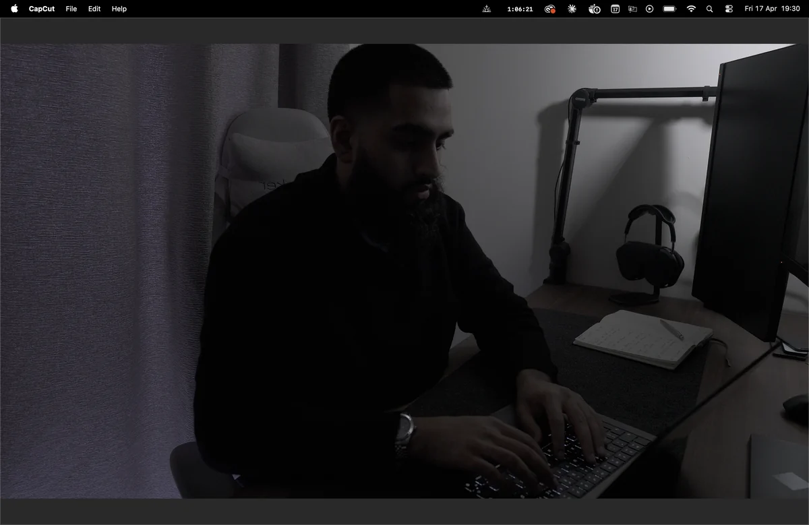

Built in London · Shipping globally
Stop renting time. Build leverage.
We map your exact bottlenecks and deploy custom AI infrastructure that automates the manual work bleeding your team.


Currently running at
- Zia Ul Quran
- Grand Oak
- S.A. Solutions
- Little Oaks
- Prep Point
Calculate Your Leverage
Based on a £45/hr average manual entry execution cost over 52 weeks.
02 / Capabilities
Complex workflows, executed autonomously.
Agents.
Forget basic chatbots. Deploy intelligent systems that reason through problems, interact with external APIs, and execute multi-step logic.
Orchestrate.
Break down your data silos. Our architecture weaves your operations together. Disjointed platforms communicate seamlessly, in real time.
Retrieval.
Turn disorganized thousands of company documents into instantly queryable corporate memory banks using Enterprise RAG infrastructure.
Zero public training.
We build walls around your IP. Client data routes through secured endpoints and is strictly prohibited from training external LLM models. End-to-end encryption. SOC 2 compliant.
03 / The Process
No fluff. Just execution.
The Audit
We map your entire architecture. We find the exact bottlenecks bleeding time and money. We lay out the orchestration blueprint before writing a single line of code.
The Code
We engineer the native integrations, build the custom LLM wrappers, and write the backend scripts. Everything is deployed directly to your secure stack.
The Run
We flip the switch. Your massive manual workloads evaporate. The system runs autonomously in the background 24/7. We monitor the uptime.

"Most agencies sell you overpriced solutions you don't need.
At Azen, we build solutions
tailored to your needs. Strategy before code. Custom over generic. Built around how your business
actually runs, not what's easiest to sell."
Tayyib Arbab
Founder, Systems Engineer
04 / Details
Straight answers.
Does this actually work with legacy systems?
Yes. If your software has an API, webhooks, or allows basic database access, we can orchestrate it. We routinely integrate with clunky CRMs, outdated ERPs, and bespoke internal tools.
How much will this cost?
We don't charge hourly. We charge for the infrastructure deployed. After the Discovery Audit, you receive a flat, transparent quote for the entire build. Typical engagements range from £8k for a single workflow to £40k+ for full multi-system orchestration. Most implementations net a 300% ROI within the first year on saved labor alone.
How long does a typical build take?
Discovery Audit: 1 to 2 weeks. Single-workflow build: 3 to 6 weeks. Multi-system orchestration: 8 to 14 weeks. We never quote a build until the audit is done. You get phase-by-phase milestones with checkpoint demos so the work is visible the whole way through.
Who owns the code and the IP?
You do. Source code, prompts, schemas, and any custom models we train on your data are yours. Everything ships into your infrastructure: your cloud account, your secrets manager, your repo. We retain no client data after handover beyond what's required for ongoing support agreements.
What about vendor lock-in if a model provider changes?
Every system we build abstracts the model layer behind a provider-agnostic interface. Swapping from one foundation model to another is a config change, not a rebuild. We routinely deploy systems that fail over between providers automatically based on cost, latency, or availability.
Can my team operate the system after handover?
Yes. Every build ships with a runbook, an admin dashboard for non-technical operators, and a recorded handover session covering monitoring, retraining, and common failure modes. We offer optional retainer support for the first 90 days, after which most clients self-manage.
What does the Discovery Audit actually output?
A written architecture document mapping every manual workflow, the systems they touch, the labor cost in hours per week, and a prioritized build sequence with effort estimates. If the math doesn't justify a build, we'll tell you. The audit is paid; if you proceed with a build, the cost is credited.
Will this ever break?
Any system can face API downtime. We build robust error handling and fallback protocols into every script. If an integration fails, the system safely queues the task and alerts us automatically before it enters a fail state. Every build ships with uptime monitoring and an incident runbook.
The leverage is in the systems.
Book a free audit. We'll find yours.
Book Audit Or send a brief in writing →